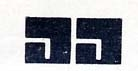
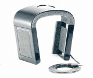
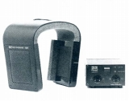
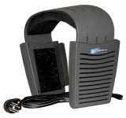
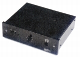

J.JFLOAT(ジャクリン・フロート) /ERGO(エルゴ)
スイスのオーディオ機器会社、Precide
SA社による特異な形状をしたヘッドフォン群。スイスのオーディオ技術者J.Jecklin氏の作成したヘッドフォンを製造していたJ.Jecklin
AG社（1979年破綻）が母体となっている。日本には1973年頃、丸紅の手により一度紹介されたようだ。（＊1）当時のオーディオ誌に、フロートを参考にした自作ヘッドフォン（＊2）が載っていたが、正規販売されたかは不明。1978年頃、コンデンサー型（＊3）の機種を瀬川冬樹氏や菅野沖彦氏などが誌聴し、特に瀬川冬樹氏に絶賛を受けたが、J.Jecklin
AG社の破綻の為か、その時点で入手不能となったらしい。
製造がPrecide
SA社に移った後、1986年よりサエク・コマースによって取り扱いが開始され、その後代理店がフィデリテイスに変わった。2000年にJ.JFLOAT
(ジャクリン・フロート)ブランドの製品はすべて製造中止となり、後継シリーズはERGO (エルゴ)
ブランドの製品となった。1999年より代理店はインタースペースとなっていたが、現状では国内代理店はないようだ。
すべての製品がイヤパッドを持たないフルオープン型であり、プラスチック板を曲げたような特異なデザインをしている。
J.JFLOAT (ジャクリン・フロート) /ERGO (エルゴ)のモデルを以下のように分類（＊）する。（この分類は個人的な意見で、メーカーの分類ではありません）
＊J.JFLOAT時代の製品は何度か改良・変更があったようですが、その詳細はわかりません。J.JFLOAT (ジャクリン・フロート) /ERGO (エルゴ)について詳しいことを知りたい方は、ヘッドフォンナビの２ちゃんねる掲示板に「yn/ppkG83Q」さんが書いた文書を探してみてください。
�T.J.JFLOAT (ジャクリン・フロート)
J.JFLOAT
(ジャクリン・フロート)のモデルはダイナミック型2機種、コンデンサー型1機種がある。
コンデンサー型はスタックスのプロバイアス機などの近年のコンデンサー型が500〜600Vバイアスであるのに対し、1000V以上の高圧と大振幅の振動膜を持つモデルである。ただし振動膜の振幅を広げると能率が下がり、それを補う為にバイアス電圧を増やさざるえない関係があり、単純に優劣を決める要素ではない。
Model-1 Model-2 （コンデンサー型） Electrostat
 
�U. ERGO (エルゴ)
エルゴブランドになり、国内に入ってくるモデルはハイルドライバーを採用したA.T.Mのみとなった。ハイルドライバーを採用したのはこのモデルが最初ではなく、ハイルドライバーの元祖ESSのヘッドフォンがすでに存在する。 なおその後A.T.Mと同系統のデザインにリニュアールした通常型ヘッドフォンもあったようで、一時期、ショップ経由で日本にも紹介されていたが、現在では扱われていないようだ。

AMP1（専用ヘッドフォンアンプ）

(AMP1)